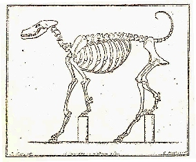
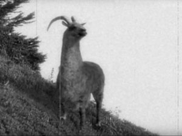

Le dahu (parfois orthographié dahut) est un animal
brun-gris dont la principale caractéristique est une chiralité sur la
longueur des pattes. Les deux pattes de l'un des côté de l'animal sont
plus courtes que celles de l'autre côté, ce qui lui donne un avantage
certain pour circuler à flanc de montagne. Le côté où les pattes sont
plus courtes détermine le sens dans lequel tourne le dahu autour des
montagnes.

Sous-espèces
Il existe donc deux sous-espèces bien marquées, le dahu dextrogyre
(Dahutus montanus dextrogyrus) qui tourne dans le sens des
aiguilles d'une montre, et le dahu lévogyre (Dahutus montanus
levogyrus) qui tourne en sens inverse. Ces deux sous-espèces, bien
qu'interfécondes, ne s'hybrident que très rarement dans la nature.

Dahu dextrogyre
Localisation
Bien qu'essentiellement localisé en Savoie, des témoignages
affirment la présence de l'animal sur la plupart des montagnes
françaises. Il est alors dénommé daru dans les Ardennes,
darou dans les vosges ou encore dairi dans le jura. Lors
du siècle dernier, une espèce se serait meme adaptée dans le
Nord-Pas-de-Calais et en Belgique sur les terrils.